A propriedade display define se um elemento é tratado como um bloco ou elemento inline e o layout usado para seus filhos, como layout de fluxo, grid ou flex.
O elemento gera uma caixa de elemento de bloco, gerando quebras de linha antes e depois do elemento quando no fluxo normal.
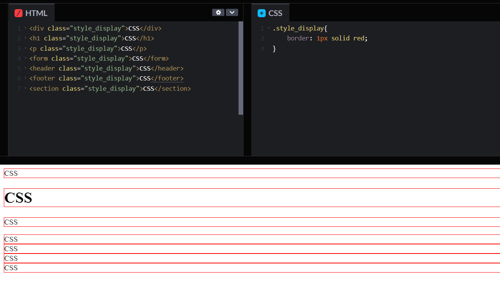O elemento gera uma ou mais caixas de elemento em linha que não geram quebras de linha antes ou depois de si mesmas. No fluxo normal, o próximo elemento estará na mesma linha se houver espaço.
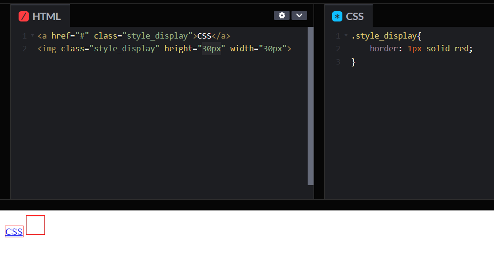Desativa a exibição de um elemento para que não tenha efeito no layout (o documento é renderizado como se o elemento não existisse). Todos os elementos descendentes também têm sua exibição desligada. Para que um elemento ocupe o espaço que normalmente ocuparia, mas sem realmente renderizar nada, use a propriedade visibility.
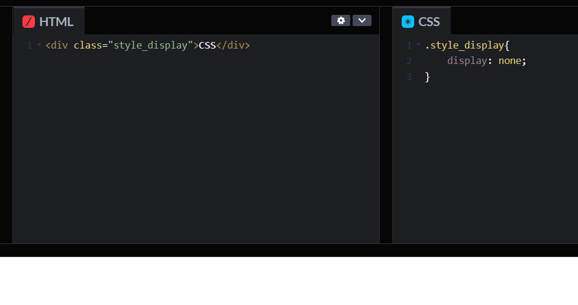O elemento gera uma caixa de elemento de bloco que fluirá com o conteúdo ao redor como se fosse uma única caixa em linha (comportando-se como um elemento substituído faria).
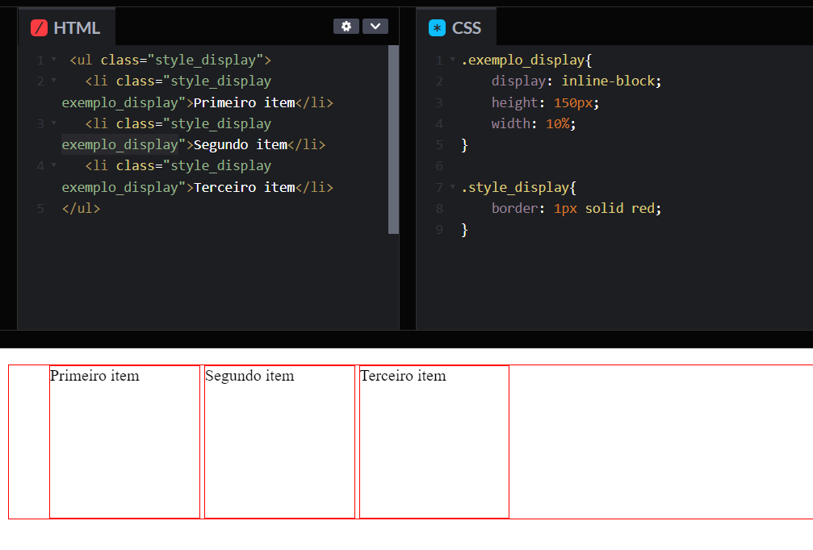A propriedade visibility pode mostrar ou ocultar um elemento sem afetar o layout de um documento (ou seja, o espaço é criado para elementos independentemente de serem visíveis ou não). A propriedade também pode ocultar linhas ou colunas em um <table>.
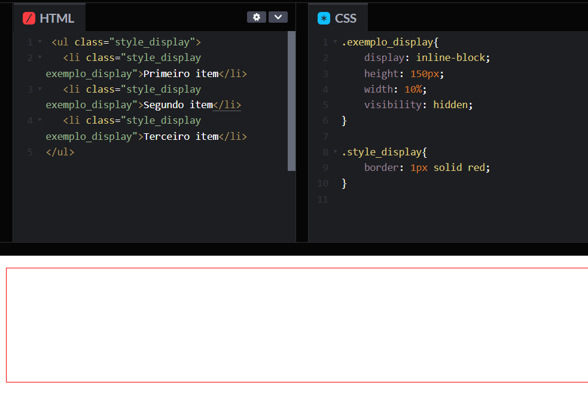A propriedade max-width estabelece a largura máxima de um elemento. Ele evita que o valor usado da propriedade width se torne maior que o valor especificado por max-width.
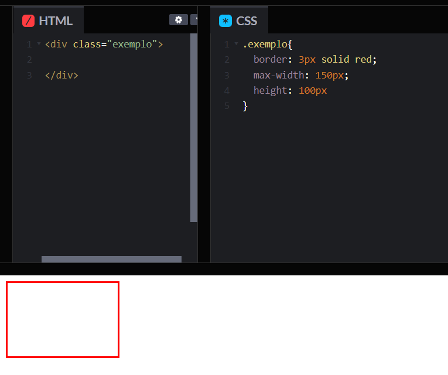O elemento é posicionado de acordo com o fluxo normal do documento. O top, right, bottom, left, e z-index propriedades não têm efeito.. Este é o valor padrão.
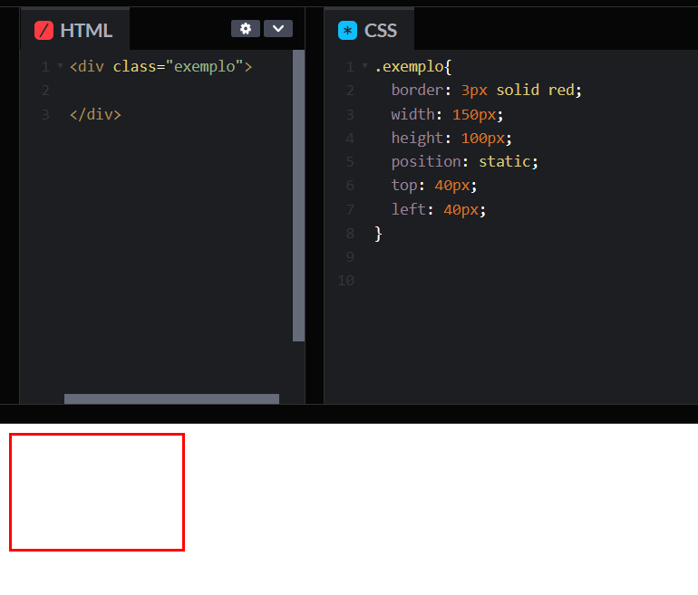O elemento é posicionado de acordo com o fluxo normal do documento e, em seguida, deslocado em relação a si mesmo com base nos valores de top, right, bottom, e left. O deslocamento não afeta a posição de nenhum outro elemento; assim, o espaço dado para o elemento no layout da página é o mesmo que se a posição fosse static.
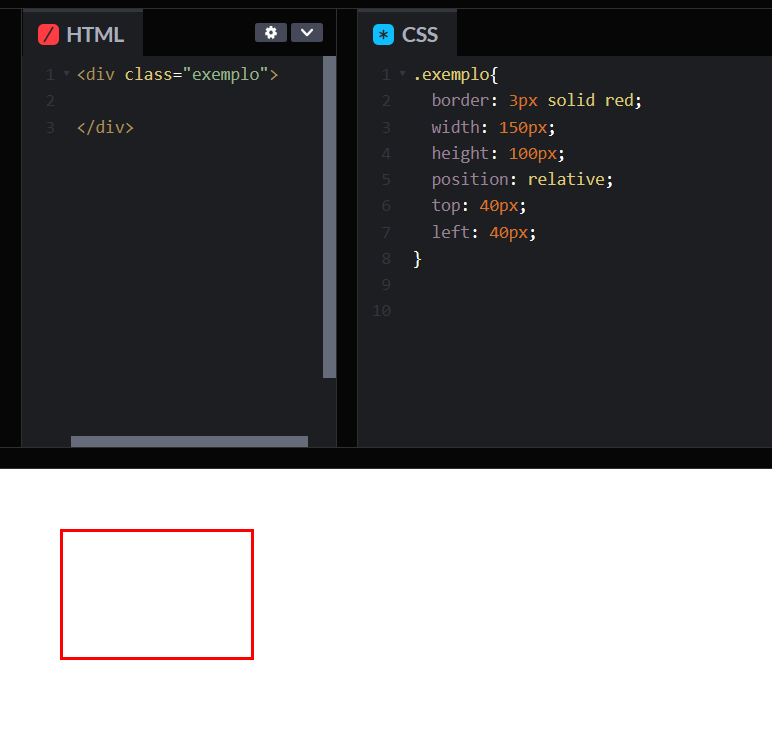O elemento é removido do fluxo normal de documentos e nenhum espaço é criado para o elemento no layout da página. Ele é posicionado em relação ao seu ancestral posicionado mais próximo, se houver; caso contrário, ele é colocado em relação ao inicial containing block. Sua posição final é determinada pelos valores de top, right, bottom, e left.
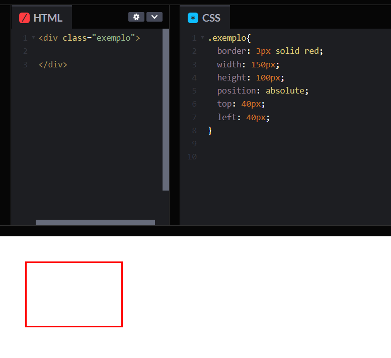O elemento é posicionado de acordo com o fluxo normal do documento e, em seguida, deslocado em relação ao ancestral de rolagem mais próximo e containing block (ancestral de nível de bloco mais próximo), incluindo elementos relacionados à tabela, com base nos valores de top, right, bottom e left. O deslocamento não afeta a posição de nenhum outro elemento.
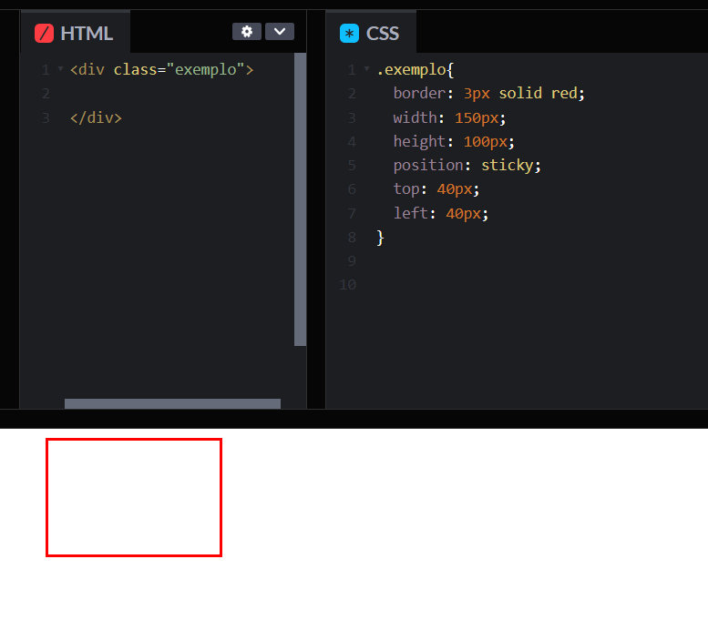O elemento é removido do fluxo normal de documentos e nenhum espaço é criado para o elemento no layout da página. Ele está posicionado em relação ao inicial containing block estabelecido pelo viewport, exceto quando um de seus ancestrais tiver uma propriedade transform, perspective ou filter definida como algo diferente de none, nesse caso, esse ancestral se comporta como o bloco que o contém. (Observe que há inconsistências no navegador com perspective e filter contribuindo para conter a formação do bloco.) Sua posição final é determinada pelos valores de top, right, bottom e left.
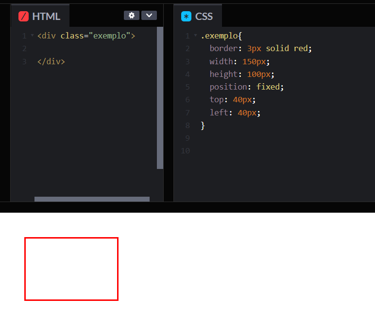A propriedade overflow especifica quando o conteúdo de um elemento de nível de bloco deve ser cortado, exibido com barras de rolagem ou se transborda do elemento.
Valor padrão. O conteúdo não é cortado e pode ser renderizado para fora da caixa de conteúdo.
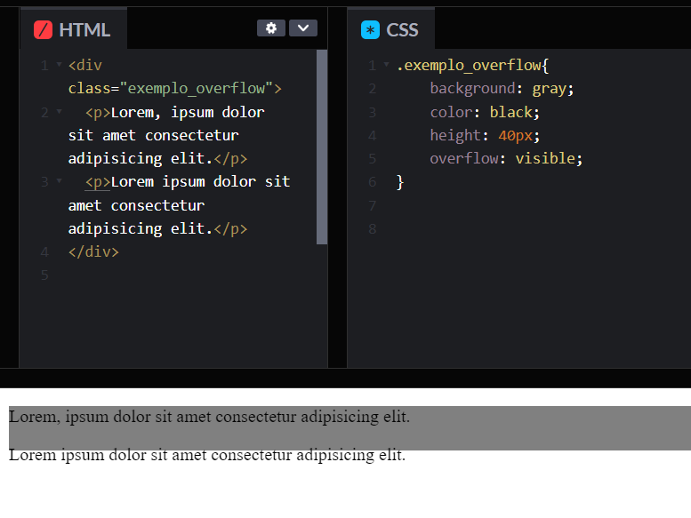O conteúdo é cortado e nenhuma barra de rolagem é exibida.
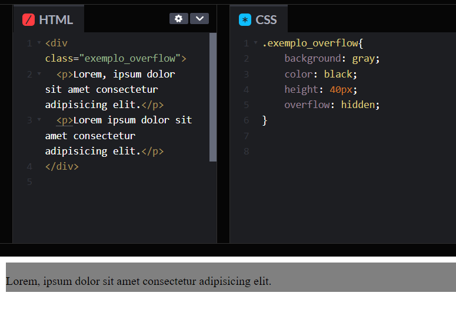O conteúdo é acessível através de barras de rolagem que são exibidas mesmo que o conteúdo não precise. Isso evita o problema de barras de rolagem aparecendo e desaparecendo quando o conteúdo é dinâmico. Impressoras podem imprimir o conteúdo vazado.
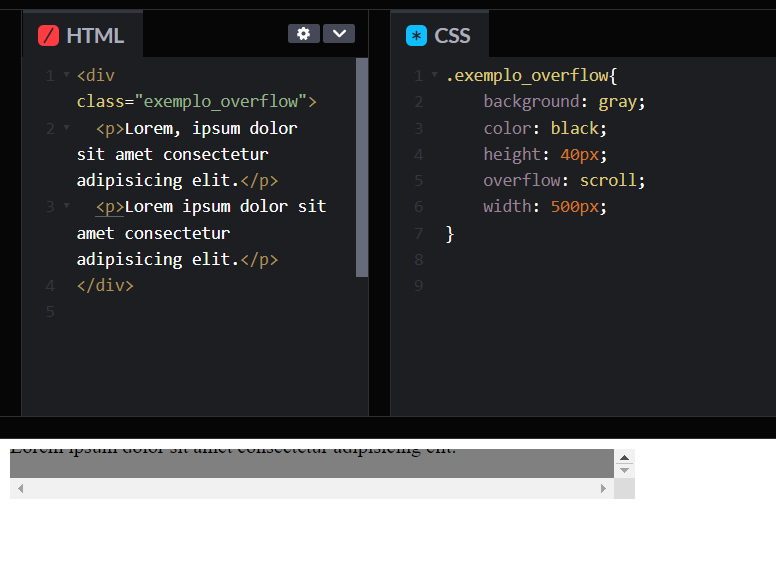Depende do navegador utilizado. Navegadores desktop como o Firefox geralmente exibem barras de rolagem apenas quando necessário.
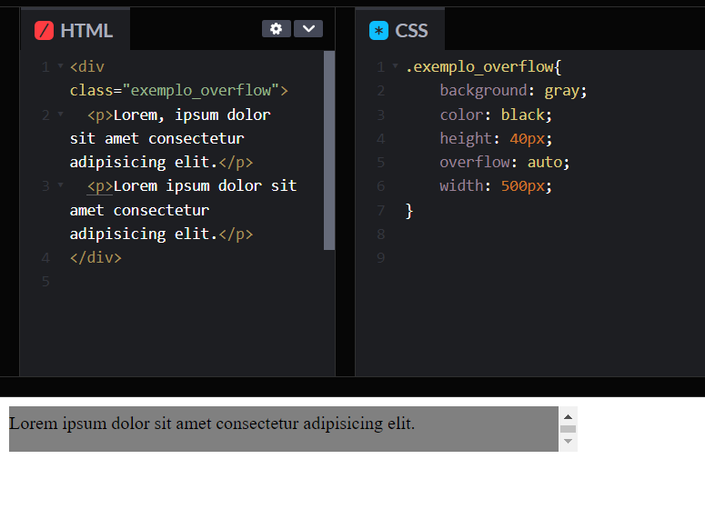MOZILLA. CSS: Folhas de estilo em cascata. Disponível em: Ver Site. Acesso em: 31 de mar. de 2023.